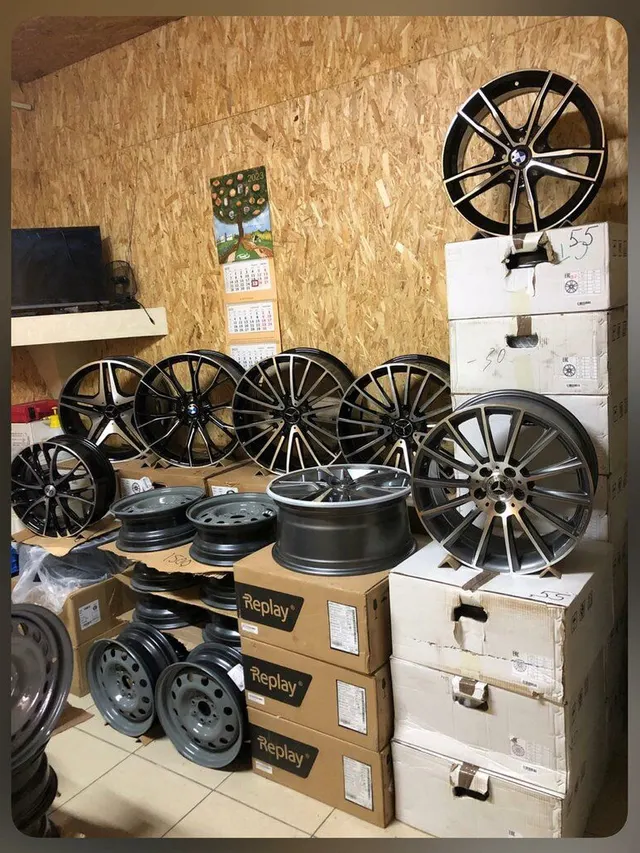
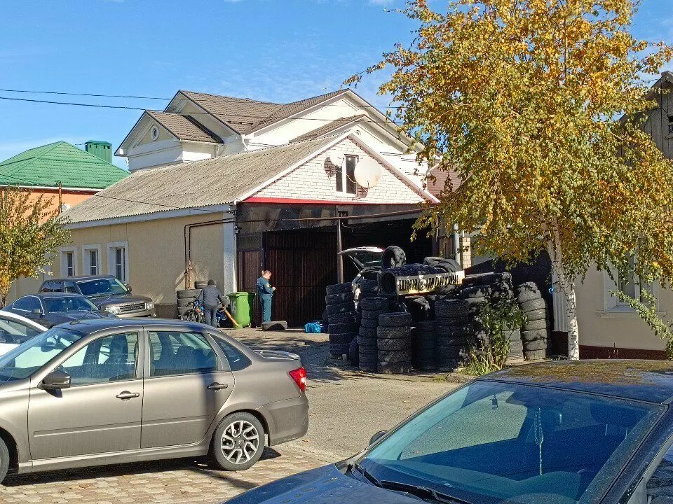
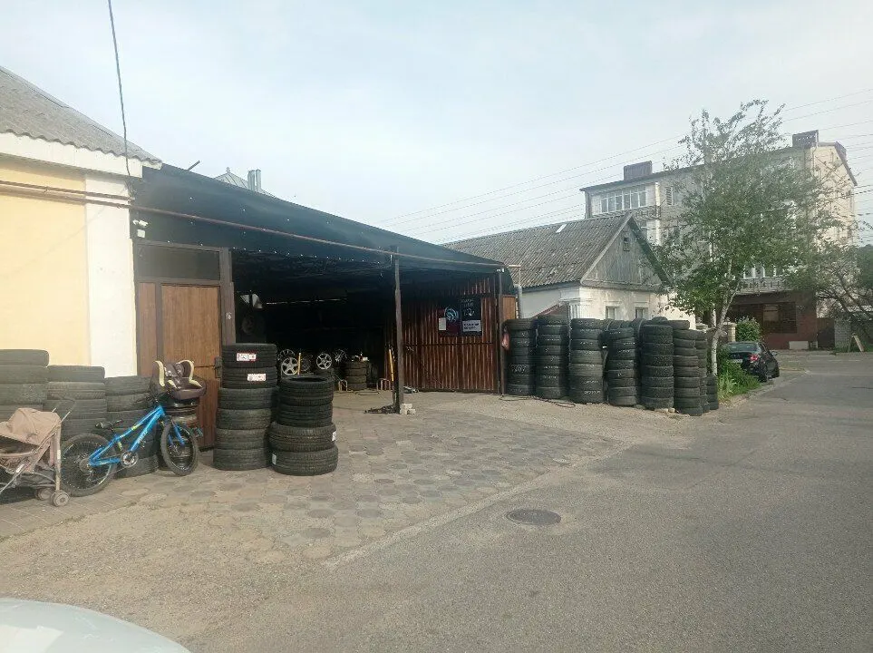
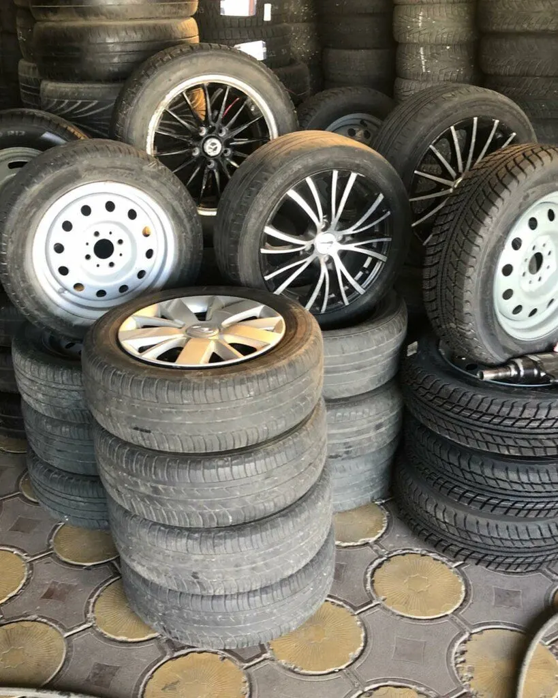
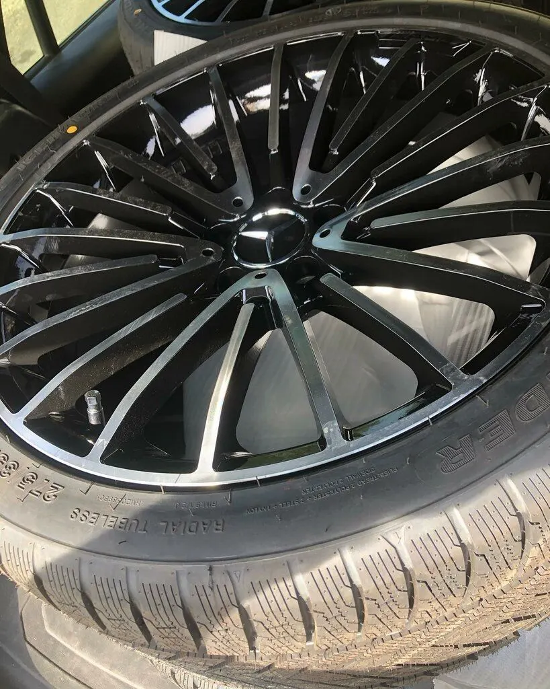

Шиномонтаж · выездной · правка и реставрация дисков
Шиномонтаж на Седова в Ставрополе
Выбираете услугу, день и время – запись уходит в WhatsApp. Выездной шиномонтаж, хранение шин, реставрация дисков. Ежедневно с 9:00 до 20:00.

- 5,0 на Яндекс Картах, 45 отзывов
- Ежедневно 09:00–20:00
- Выездной шиномонтаж

Услуги
Услуги – с карточки на Яндекс Картах. Прайс там не заполнен.
Шиномонтаж
- Шиномонтажуточнить
- Выездной шиномонтажуточнить
- Балансировкауточнить
- Вулканизацияуточнить
- Хранение шинуточнить
Диски
- Прокатка дисковуточнить
- Алмазная проточка дисковуточнить
- Реставрация дисковуточнить
- Покраска дисковуточнить
- Утилизация шинуточнить
На карточке цены не указаны – стоимость уточняйте по телефону.
Как записаться
- 01
Выбираете услугу, день и время
Ниже, в форме записи: сообщение уходит в WhatsApp с готовым текстом.
- 02
Или пишете и звоните сами
Контакты – в конце страницы, работаем с 09:00 до 20:00.
- 03
Приходите: переулок Седова, 16
Адрес и карта – в конце страницы.



Что вас ждёт
Быстро и качественно
Гости пишут в отзывах: всегда быстро и качественно, помогают.
Работают много лет
Клиент отмечает: ребята работают каждый день на протяжении многих лет.
Чай и кофе
В отзыве: кофе и чай наливают.
Отзывы с Яндекс.Карт
«Очень хороший шиномонтаж. А ребята тут очень добрые, вежливые и отзывчивые.»
Мила Елизаветина · 31 июля
«Хорошие ребята, всегда все быстро и качественно, каждый раз когда приезжаю, всегда помогают»
Елена Р · 22 июня
«Хороший шиномонтаж, делают быстро, но как не приеду очередь, видимо все пытаются сюда попасть. Необходимо звонить предварительно.»
Армен Веретенян · 3 декабря
Отзывы с карточки на Яндекс.Картах, без правок.
Частые вопросы
Есть выездной шиномонтаж?
Да, он указан на карточке.
Нужно ли записываться?
Гости пишут, что бывает очередь, и советуют звонить заранее.
Где вы находитесь?
Ставрополь, переулок Седова, 16, микрорайон № 26.
Запишитесь на удобное время
- Адрес
- переулок Седова, 16, микрорайон № 26, Ставрополь
- Часы
- ежедневно 09:00–20:00
- Телефон
- +7 (928) 321-68-91